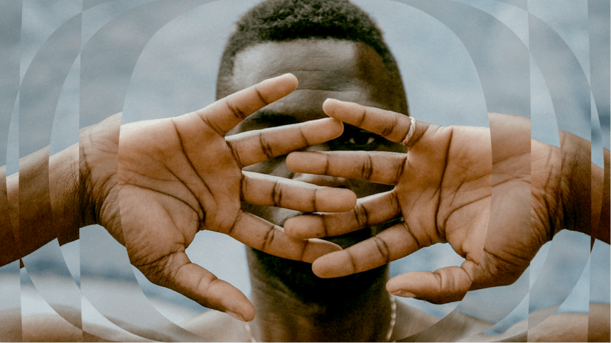
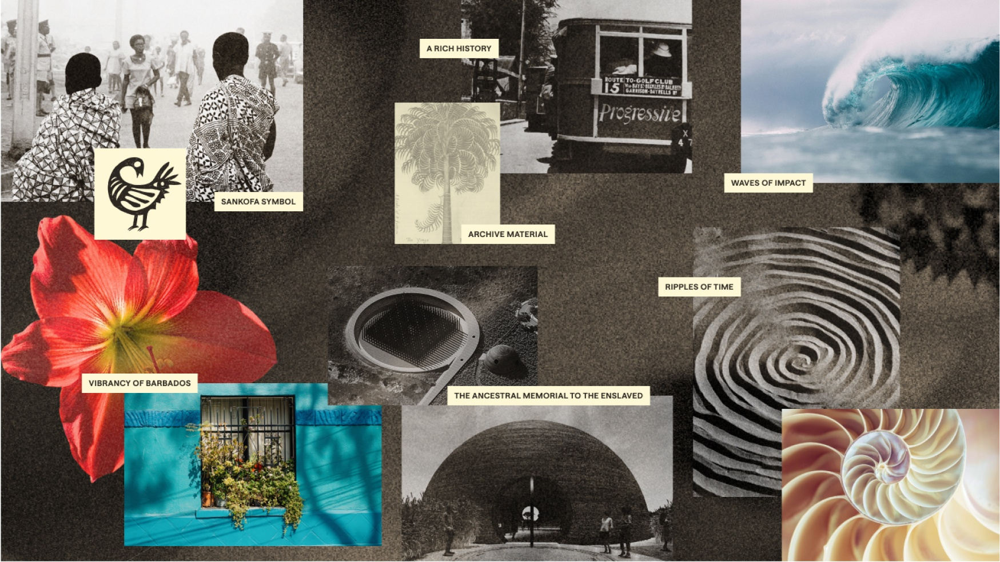
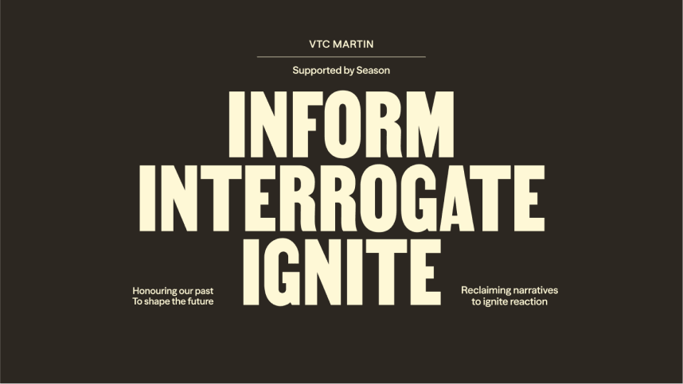
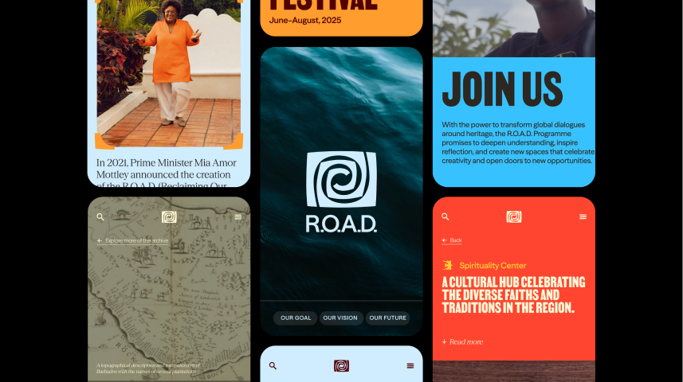
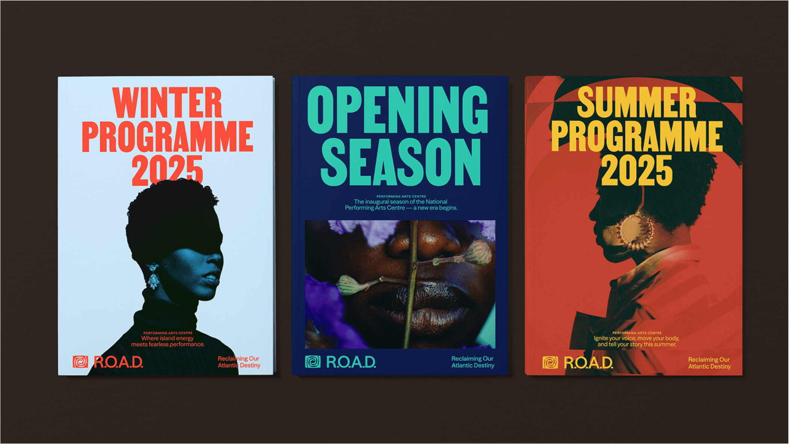

R.O.A.D. — Reclaiming
Our Atlantic Destiny

Challenge
In 2025, Barbados marks 400 years since the first British ship arrived on its shores. The Government of Barbados wanted to meet that anniversary with something more than commemoration — the R.O.A.D. Programme is a national movement to digitise and preserve one of the world's largest archives of transatlantic slave trade records, establish a Heritage District, and reclaim authorship over Barbadian history. The brief was to build a brand that could carry all of that weight without buckling under it.
Approach
The work required immersion, not assumption — so our team embedded with local stakeholders to understand what this programme meant to the people it represented. The brand strategy was built around a single framework: interrogate the past honestly, inform the present through design and storytelling, and ignite a future where heritage becomes economic and cultural momentum. The Sankofa symbol — look back to move forward — became the conceptual anchor, reinterpreted through a Caribbean lens into a spiral that placed Barbados at the centre, radiating outward.


Outcome
A visual identity and brand system that works across memorial installations, digital platforms, and public space — built to be handed back to the people of Barbados and evolved from there. The R.O.A.D. website launched as the programme's first public face, with the infrastructure in place to grow into a full platform for education, cultural expression, and connection.

